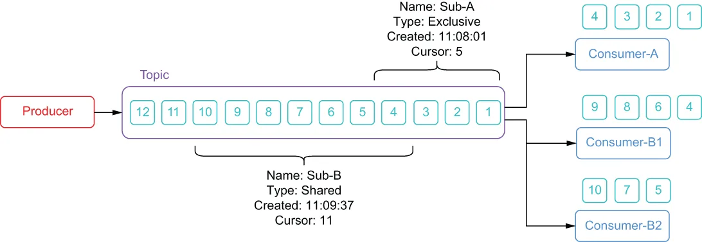

Pulsar is built on the publish-subscribe (pub-sub) pattern. In this pattern, producers publish messages to topics. Consumers can then subscribe to those topics, process incoming messages, and send an acknowledgment when processing is complete.
Pulsar 构建在发布-订阅（pub-sub）模式之上。在这种模式中，生产者把消息发布到主题。消费者随后可以订阅这些主题，处理传入的消息，并在处理完成时发送确认。
A producer is any process that connects to a Pulsar broker, either directly or via the Pulsar proxy, and publishes messages to a topic, while a consumer is any process that connects to a Pulsar broker to receive messages from a topic. When a consumer has successfully processed a message, it needs to send an acknowledgment to the broker so the broker knows that it has been received and processed. If no such acknowledgment is received within a preconfigured timeframe, the broker will redeliver it to consumers on that subscription.
生产者是指任何连接到 Pulsar broker（直接连接或通过 Pulsar proxy）并向主题发布消息的进程；而消费者是指任何连接到 Pulsar broker 以从主题接收消息的进程。当消费者成功处理完一条消息后，需要向 broker 发送一个确认，以便 broker 知道该消息已被接收并处理。如果在预先配置的时间内没有收到这样的确认，broker 会把该消息重新投递给该订阅上的消费者。
When a consumer connects to a Pulsar topic, it establishes what is referred to as a subscription, which specifies how messages will be delivered to a group of one or more consumers. There are four available subscription modes in Pulsar: exclusive, failover, key-shared, and shared. Regardless of the subscription type, messages are delivered in the order they are received.
当消费者连接到 Pulsar 主题时，它会建立所谓的订阅，该订阅指定了消息将如何被投递给由一个或多个消费者组成的消费组。Pulsar 中有四种可用的订阅模式：独占（exclusive）、灾备（failover）、按 Key 共享（key-shared）和共享（shared）。无论采用哪种订阅类型，消息都按它们被接收的顺序投递。
Information about these subscriptions is retained in the local Pulsar ZooKeeper metadata and includes the http addresses of all the consumers, among other things. Each subscription also has a cursor associated with it that represents the position of the last message which was consumed and acknowledged for the subscription. To prevent message redelivery, these subscription cursors are retained on the bookies to ensure they will survive any broker level failures.
关于这些订阅的信息被保存在本地的 Pulsar ZooKeeper 元数据中，其中包括所有消费者的 http 地址等内容。每个订阅还关联着一个游标，它表示该订阅下最后一条已被消费并确认的消息的位置。为了防止消息被重复投递，这些订阅游标被保存在 bookie 上，以确保它们能够在任何 broker 级别的故障中存活下来。
Pulsar supports multiple subscriptions per topic, which allows multiple consumers to read data from a topic. As you can see in figure 2.11, the topic has two different subscriptions: Sub-A and Sub-B. Consumer-A connected to the topic first and is operating in exclusive consumer mode, which means that all the messages in the topic will be consumed by Consumer-A. Thus far, Consumer-A has only acknowledged the first four messages, so its cursor position for the subscription, Sub-A is currently set to 5.
Pulsar 支持每个主题上有多个订阅，这使得多个消费者能够从一个主题读取数据。正如你在图 2.11 中看到的，该主题有两个不同的订阅：Sub-A 和 Sub-B。Consumer-A 最先连接到该主题，并且工作在独占消费者模式下，这意味着该主题中的所有消息都将由 Consumer-A 消费。到目前为止，Consumer-A 只确认了前四条消息，因此它在订阅 Sub-A 上的游标位置当前被设置为 5。

Figure 2.11 Pulsar supports multiple subscriptions per topic, which allows multiple consumers to read the same data. Consumer-A has consumed the first four messages on the exclusive subscription named Sub-A, whereas messages 4 through 10 have been distributed across the two consumers on the shared subscription named Sub-B.
图 2.11 Pulsar 支持每个主题上有多个订阅，这使得多个消费者能够读取相同的数据。Consumer-A 在名为 Sub-A 的独占订阅上消费了前四条消息，而第 4 到第 10 条消息则被分发到了名为 Sub-B 的共享订阅上的两个消费者。
The subscription named Sub-B was created after the first three messages were produced; therefore, none of those messages were delivered to the consumers for that subscription. It is a common misconception that any subscriptions created on a topic will start at the very first message for that topic, which is why I chose to illustrate that point here and show that you will only receive messages that are published to the topic after you subscribe to it.
名为 Sub-B 的订阅是在前三条消息产生之后才创建的；因此，那几条消息中没有一条被投递给该订阅的消费者。一个常见的误解是：在某个主题上创建的任何订阅都会从该主题的第一条消息开始消费——这正是我在这里特意说明这一点的原因，我要表明的是：你只会收到在你订阅该主题之后才发布到该主题的消息。
We can also see that, since Sub-B is operating in shared mode, the messages have been distributed across all the consumers in the group with each message only being processed by a single consumer in the group. You can also see that Sub-B’s cursor is farther ahead than Sub-A’s cursor, which is not uncommon when you distribute the messages across multiple consumers.
我们还可以看到，由于 Sub-B 工作在共享模式下，消息被分发给了组内的所有消费者，每条消息只由组内的某一个消费者处理。你还可以看到，Sub-B 的游标比 Sub-A 的游标更靠前，当你把消息分发给多个消费者时，这种情况并不少见。